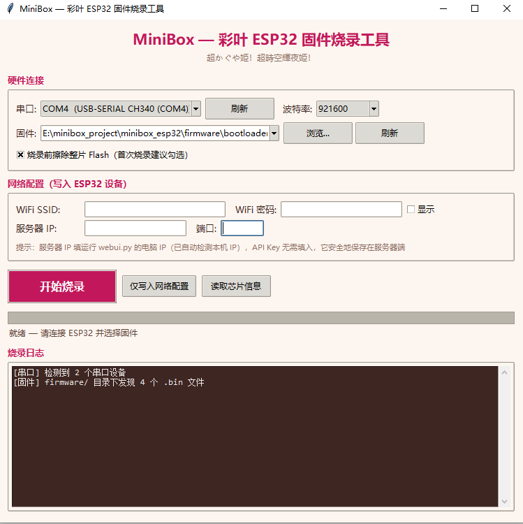

使用 GPT-SoVITS 本地合成高质量角色语音，LLM 负责持续对话和上下文。
PC Web UI
语音对话工作台。
MiniBox 的核心界面运行在本地浏览器里，负责 LLM 对话、GPT-SoVITS / MiniMax / Edge-TTS 声音输出、麦克风输入和角色模型切换。
Core Features
从角色设定到语音输出，一套闭环。
支持 GPT-SoVITS、MiniMax 和 Edge-TTS，根据本地或云端场景切换声音方案。
从录音到语音识别再到自动回复，适合做自然的实时聊天体验。
内置 `/api/voice_chat`，方便第三方客户端、硬件底座或其他本地工具接入。

ESP32 Client
把语音角色放进实体底座。
ESP32-S3 客户端通过 WiFi 连接 PC 服务，支持按键唤醒、自动语音检测、OLED 状态动画和扬声器播放。仓库内置烧录工具，能配置 WiFi 与服务地址。
INMP441 microphone
MAX98357A speaker amp
SSD1306 OLED status
Quick Start
本地启动，浏览器开始聊天。
pip install -r requirements.txt
python webui.py
http://127.0.0.1:7860